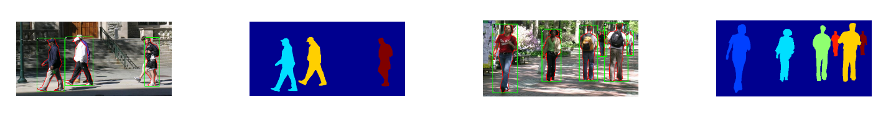
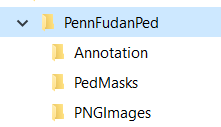

Pennfudan
Name
Penn-Fudan Database for Pedestrian Detection and Segmentation
Description
This is an image database containing images that are used for pedestrian detection in the experiments reported in 1. The images are taken from scenes around campus and urban street. The objects we are interested in these images are pedestrians. Each image will have at least one pedestrian in it.
The heights of labeled pedestrians in this database fall into [180,390] pixels. All labeled pedestrians are straight up.
There are 170 images with 345 labeled pedestrians, among which 96 images are taken from around University of Pennsylvania, and other 74 are taken from around Fudan University.
Annotations Examples

Usage
 Example showing how to use this dataset
Example showing how to use this dataset
How to load this dataset
# Imports
from icevision.all import *
import icedata
# Load the PennFudan dataset
path = icedata.pennfudan.load_data()
How to parse this dataset
# Get the class_map, a utility that maps from number IDs to classs names
class_map = icedata.pennfudan.class_map()
# Randomly split our data into train/valid
data_splitter = RandomSplitter([0.8, 0.2])
# PennFudan parser: provided out-of-the-box
parser = icedata.pennfudan.parser(data_dir=path, class_map=class_map)
train_records, valid_records = parser.parse(data_splitter)
# shows images with corresponding labels and boxes
show_records(train_records[:6], ncols=3, class_map=class_map, show=True)
How to load the pretrained weights of this dataset
class_map = icedata.pennfudan.class_map()
model = icedata.pennfudan.trained_models.faster_rcnn_resnet50_fpn()
Dataset folders

Annotations sample
# Compatible with PASCAL Annotation Version 1.00
Image filename : "PennFudanPed/PNGImages/FudanPed00001.png"
Image size (X x Y x C) : 559 x 536 x 3
Database : "The Penn-Fudan-Pedestrian Database"
Objects with ground truth : 2 { "PASpersonWalking" "PASpersonWalking" }
# Note there may be some objects not included in the ground truth list for they are severe-occluded
# or have very small size.
# Top left pixel co-ordinates : (1, 1)
# Details for pedestrian 1 ("PASpersonWalking")
Original label for object 1 "PASpersonWalking" : "PennFudanPed"
Bounding box for object 1 "PASpersonWalking" (Xmin, Ymin) - (Xmax, Ymax) : (160, 182) - (302, 431)
Pixel mask for object 1 "PASpersonWalking" : "PennFudanPed/PedMasks/FudanPed00001_mask.png"
# Details for pedestrian 2 ("PASpersonWalking")
Original label for object 2 "PASpersonWalking" : "PennFudanPed"
Bounding box for object 2 "PASpersonWalking" (Xmin, Ymin) - (Xmax, Ymax) : (420, 171) - (535, 486)
Pixel mask for object 2 "PASpersonWalking" : "PennFudanPed/PedMasks/FudanPed00001_mask.png"
License
Please, check out here
Relevant Publications
-
Object Detection Combining Recognition and Segmentation. Liming Wang, Jianbo Shi, Gang Song, I-fan Shen. ACCV 2007 pp 189-199 ↩